Photo Booth
Nu kommer du att få skapa en Photo Booth-app där du kan ändra din egen bild från webbkameran till att bli det som du drömmer om att vara. Det är din fantasi som styr vad ditt program ska innehålla, här får du tips på hur du kan byta frisyr, sätta dit solglasögon eller kanske en stilig mustasch!
Här kan du titta på exempel på
Photo Booth och en Disco-version på Scratch.
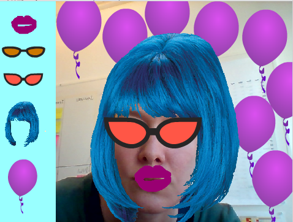
1: Få igång webbkameran
Det första du ska göra är att programmera ett skript som sätter igång webbkameran och visar dig i bild så fort du startar ditt Photo Booth-program.
Skapa ett nytt Scratch-projekt och ta bort katten. Tryck på saxen (högt uppe i mitten) och sedan på katten så försvinner den.

Klicka på SCEN längst ned till vänster och gå in på fliken SKRIPT högst upp i mitten.
Dra ut ett block för HÄNDELSER: "när START (flaggan) klickas på” till skriptytan. Under den kopplar du fast blocket för KÄNNA AV: ”sätt video PÅ”.
Till samma skript fäster du blocket för KÄNNA AV: ”sätt videogenomskinlighet till %” och sätt värdet till 0%, alltså inte genomskinligt alls.
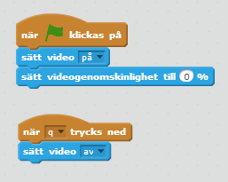
Nu har du skapat ditt första skript! Testa ditt projekt. Klicka på START. Du ska få upp en popup-ruta som frågar ifall du vill att Scratch får tillgång till din webbkamera. Välj "Allow”. Ser du dig själv i bild?
2: Ändra utseende
Nu är det dag att skapa frisyrer, glasögon, mustascher eller andra effekter som du kan välja att lägga till din bild för att ändra utseende. Du skapar dem som SPRAJTAR och väljer om du vill rita själv eller välja ur biblioteket. Börja med att göra 2-3 sprajtar, du kan alltid göra fler senare!
Kan jag använda bilder som jag hittar på nätet?
Om du vill använda bilder från nätet, tänk på att det måste vara en bild som du har tillåtelse att använda för personen som skapat den. De flesta bilder på nätet är upphovsrättsskyddade, vilket innebär att du inte får använda dem utan att fråga om lov först. Men det finns bilder som är ok att använda, till exempel om du söker med Creative Commons sökmotor.
För att rita själv, välj "Rita ny sprajt” (penseln). Här får du själv hitta på och prova dig fram för att skapa egna sprajtar. Om du hellre vill använda färdiga sprajtar, gå till biblioteket genom att trycka på knappen för ”Välj sprajt från bibliotek”.

Dra sprajtarna dit där du vill ha dem på scenen. Testa med ditt ansikte i bild så att det ser bra ut! Döp gärna sprajtarna till "Peruk”, ”Glasögon” och så vidare efter vad de föreställer.
Om du behöver ändra storlek på sprajten, tryck på knappen med pilar inåt eller utåt och sedan på sprajten tills den är lagom stor.
För att din sprajt alltid ska hamna rätt på scenen, behöver du sätta en startposition. Alltså en plats där den alltid startar ifrån. Sedan kommer du så klart att kunna dra runt på effekterna i ditt färdiga program, för att passa in på olika ansikten.
Gå till fliken för SKRIPT för din effekt. Dra ut blocket "när START (flaggan) klickas på” från HÄNDELSER till skriptytan. Under den kopplar du fast blocket för RÖRELSE: ”gå till X Y ”.

Gör ett likadant skript för alla dina sprajtar, med den X- och Y-position som stämmer med där du vill att just den sprajten ska hamna. Positionen sätts automatiskt i blocket när du drar sprajten över Scen.
Gå nu in på informationsrutan för varje sprajt och se till så att rutan för "kan dras på scenen” är ikryssad. På så sätt kan du i ditt program dra runt på effekten.
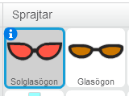 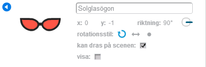
Testa ditt projekt! Klicka på START. Startar dina effekter där du vill ha dem? Kan du dra runt med effekterna och passa in dem på ditt ansikte?
3: Knappar för att välja effekt
Nästa steg är att skapa en meny med knappar för att välja effekt i ditt Photo Booth. När du startar ditt Photo Booth ska inga effekter vara synliga, utan det blir de först när du trycker på knapparna. Du behöver en knapp för varje effekt du vill använda.
Börja med att göra en sprajt som ska vara menyrad. Välj "Rita ny sprajt” (penseln) och använd REKTANGEL för att skapa en menyrad i valfri färg. Tänk på att göra rektangeln tillräckligt stor för alla dina knappar – men inte för stor, du vill ju kunna se dig själv i bild också!
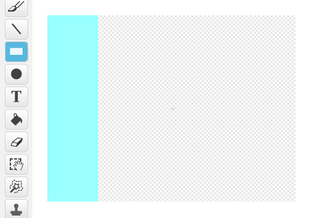
Så här kan en menyrad se ut när du ritar den.
Dra din menyrad dit du vill ha den på Scen: på sidan, nere eller upptill i bild.
Nu behöver du kopiera dina sprajtar som du har gjort för olika effekter, en och en, genom att högerklicka och välja kopiera. Döp gärna sprajtarna till "Knapp ….” och din effekt.
De kopierade sprajtarna ska fungera som knappar. Du behöver förminska dem så att de får plats i din menyrad. Dra dem dit och lägg i en rad så att alla får plats.
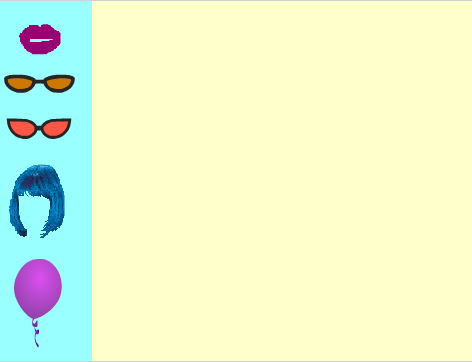
Så här kan en menyrad se ut på scen med olika knappar.
Gå in på informationsrutan för varje sprajt och se till så att rutan för "kan dras på scenen” inte är ikryssad, eftersom du inte vill kunna flytta på knapparna i programmet.
Gå till fliken för SKRIPT och sätt rätt startposition för varje knapp, på samma sätt som du gjorde med dina effekter tidigare.
Nu ska du få göra ett skript som säger åt knappen att skicka meddelande till effekten. Att en sprajt kan skicka meddelande till en annan, kallas för en FUNKTION. Det är ett sätt för olika delar i programmet att kunna "prata” med varandra. Du kommer snart att se varför det är bra att ha!
Välj en knapp och gå till fliken för SKRIPT. Dra ut ett block för HÄNDELSER: ”när denna sprajt klickas på” till skriptytan.
Nu ska du be knappen att skicka meddelande när du klickar på den. I HÄNDELSER hittar du "skicka ”, fäst blocket till det ovan och ändra till ett nytt meddelande i rullistan. Skriv in namnet på din effekt, till exempel ”glasögon”.
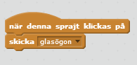
Markera nu sprajten som föreställer den effekt som knappen ska prata med. Gå till fliken för SKRIPT och dra ut blocket ”när jag tar emot ” från HÄNDELSER. Välj meddelandet för din effekt i rullistan, till exempel meddelandet ”glasögon”.
Fäst blocket för ”visa” som du hittar under UTSEENDE. Nu har du sagt åt din effekt att visa sig när den får meddelandet från knappen. Men du behöver också säga åt den att gömma sig innan knappen skickar meddelandet!
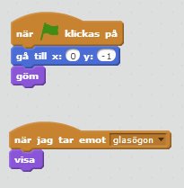
Dra ut blocket för ”göm” som också finns under UTSEENDE och fäst det till din startposition, alltså under ”när START (flaggan) klickas på”.
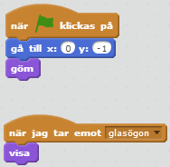
Nu behöver du göra likadana skript för alla dina knappar och alla effekter. Du kan kopiera skript genom att högerklicka, välja kopiera och sedan dra det till nästa sprajt. Byt namn på meddelandet för varje sprajt så att de stämmer överens med vardera knapp/effekt.
Tips: Ibland hamnar effekterna på varandra i fel ordning, så att till exempel en hatt hamnar under en peruk istället för tvärtom. Om det händer kan du lägga till "lägg överst” eller ”gå tillbaka 1 lager” från UTSEENDE och välja vilken ordning du vill att effekterna ska ligga ovanpå varandra.
Testa ditt projekt! Klicka på START. Är alla effekter gömda när du startar programmet? Händer det något när du trycker på knapparna? Hamnar effekterna i rätt ordning?
4: Stäng av kameran
Till sist ska du lägga till ett skript som stänger av kameran när du trycker på Q-tangenten på tangentbordet. Det skriptet skapar du för scenen, precis som när du startade kameran.
Markera SCEN längst ned till vänster och gå in på fliken SKRIPT. Dra ut ett block för ”när trycks ned” från HÄNDELSER till skriptytan. Under den kopplar du fast blocket för KÄNNA AV: ”sätt video AV”.
Välj vilken tangent som ska tryckas ned för att stänga av kameran. Här i exemplet har vi valt "Q” som i Quit.

Testa ditt projekt! Klicka på START. Går det att stänga av webbkameran med Q-tangenten?
Färdig!
Grattis, nu har du ett färdigt program.
Glöm inte att spara ditt projekt! Döp ditt projekt i rutan högst upp till vänster så att du enkelt kan hitta det igen.
Testa ditt projekt
Visa gärna någon det som du har gjort och låt dem testa. Tryck på DELA för att andra ska kunna hitta projektet på Scratch. Gå ut till projektsidan och låt någon testa.
Varför kan jag inte ta bilder med mitt Photo Booth?
Det finns inget sätt att spara bilden från webbkameran i Scratch. Så ditt Photo Booth kommer inte att kunna spara bilder på dig utan bara vara för att testa olika effekter live.
Det handlar om din integritet på nätet. Scratch får inte göra det möjligt för dig eller någon annan att programmera något som sparar bilder eller film på den som använder programmet. Tänk om du spelade ett spel i Scratch och att du utan att du visste om det blev inspelad via webbkameran. Vad skulle du tycka om det?
Vill du ändå spara bilden på dig själv i ditt Photo Booth? Då kan du använda Print Screen, en funktion i datorn för att spara en bild på det som visas på skärmen. Kom ihåg att inte spara bilder på någon som inte gett dig tillåtelse till det!
Utmaningar
Nu är det fritt fram att hitta på dina helt egna funktioner till ditt program – eller fortsätta med någon av våra utmaningar som finns här i instruktionen:
Ta bort en effekt
Det kan vara användbart med en funktion som tar bort effekter allt eftersom du provar dem och väljer ditt utseende. På så sätt kan du ångra dina val. Här får du göra ett skript som gömmer effekten igen om du trycker ned mellanslag-tangenten (Space) samtidigt som du klickar på effektknappen.
Gå in på fliken för SKRIPT på en av dina effekter. Dra ut blocket "om <> då: annars” som finns under KONTROLL och lägg på skriptytan.
Under KÄNNA AV finns blocket "tangent nedtryckt?”. Välj ”mellanslag” ur rullistan och fäst blocket inuti <> på ”om <> då: annars”.
Flytta ditt block "visa” som sitter under ”när jag tar emot ” och fäst det efter ”annars”. Ta ett nytt block för ”göm” under UTSEENDE och fäst det efter ”om <> då”.
Fäst hela skriptet till händelsen ”när jag tar emot ” med meddelandet. Nu ska skriptet säga att:
När sprajten tar emot meddelandet
Om mellanslag är nedtryckt
Göm sprajten
Annars visa sprajten
Välj vilken ordning sprajten ska hamna på scenen, om det behövs
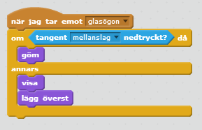
Gör samma ändringar i skriptet för alla dina effekter!
Testa ditt projekt! Klicka på START. Visar sig effekterna när du klickar på knapparna? Gömmer de sig igen när du håller ned mellanslag (Space) samtidigt som du klickar på knappen?
Ändra utseende på dina effekter
Om du har gjort en peruk, ett par läppar eller en mustasch, kanske du vill kunna ändra färg på dem? Eller ändra något annat med effektens utseende, till exempel göra olika sorters mustascher eller frisyrer? Istället för att göra massor av sprajtar, kan du ha flera olika KLÄDSLAR till dina sprajtar.
Markera sprajten och gå in på fliken som heter KLÄDSLAR.
Kopiera den klädsel som ligger där genom att högerklicka och välja kopiera. Gör så många klädslar som du vill ha olika utseende.
Markera varje klädsel och ändra utseendet så som du vill ha det. För att ändra färg, använd FYLL MED FÄRG (färgburken). Du väljer bland färgerna nere i paletten. Klicka på klädseln för att fylla i med färgen.
Gå till fliken för Skript. För att byta klädsel, välj från HÄNDELSER: ”när (…) trycks ned” och välj vilken tangent på tangentbordet som du ska använda för att byta klädsel. Du kan till exempel välja ”H” för hår eller ”M” för mustasch.
Fäst blocket för ”nästa klädsel” från UTSEENDE till skriptet.
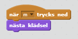
Testa ditt projekt! Klicka på START. Kan du ändra utseende på din effekt genom att trycka på den tangent som du har angett i skriptet?
Tips: Ett annat sätt att byta färg är att använda blocket för att ”ändra färgeffekten” som finns under UTSEENDE. Då behöver du inte skapa olika klädslar.
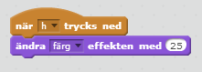
Ändra storlek på dina effekter
Du vill kanske också kunna ändra storlek på effekterna, så att de kan passa ansikten som är olika stora i bild. Här får du göra ett skript som låter dig ändra storlek genom att klicka på effekten. Den blir större om du klickar på den, och mindre om du samtidigt håller in mellanslag på tangentbordet.
Gå till fliken för Skript. Välj ”när denna sprajt klickas på” från HÄNDELSER och under den sätter du blocket ”om <> då: annars” som finns under KONTROLL.
Fäst blocket för ”ändra storlek med ” från UTSEENDE till skriptet, ett under ”då” och ett under ”annars”. Testa dig fram med vilket värde du vill ha, alltså hur mycket mindre eller större effekten ska bli. För att förminska effekten ska det vara ett minusvärde. I vårt exempel använder vi -10 och 10 som värden.
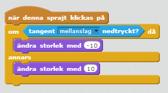
Testa ditt projekt! Klicka på START. Kan du göra effekten större genom att klicka på den? Blir den mindre om du håller in mellanslag samtidigt som du klickar på den?
Ramar
Du kan göra ramar som går att välja till bilden i ditt Photo Booth. Om du inte har plats i menyraden för en till knapp, kan du låta användaren välja ram med R-tangenten på tangentbordet.
Gör en ny sprajt med "Rita ny sprajt” (penseln) och använd LINJE eller PENSEL för att rita ramar. Öka linjebredden och titta på scenen så att ramen hamnar rätt.
Gå till fliken för SKRIPT och gör ett likadant skript som för alla dina andra effekter. Om du inte gör en ram-knapp i din menyrad, välj ”när trycks ned” från HÄNDELSER och ange till exempel ”R” som tangent som ska tryckas ned.
Vill du kunna växla mellan flera ramar, rita flera KLÄDSLAR och sätt ett skript som säger att "när denna sprajt klickas på” då ska sprajten välja ”nästa klädsel”.
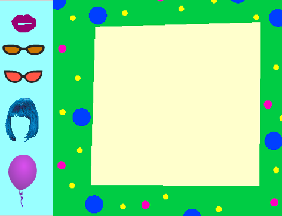
Testa ditt projekt! Klicka på START. Kan du få en ram runt din bild när du trycker på R-tangenten? Går det att byta ram genom att klicka på den?
Klart! Nu kan du hitta på egna funktioner eller skapa ännu fler effekter till ditt Photo Booth. Lycka till!
Frågeställningar
Varför tror du att det inte är möjligt att spara bilder från kameran i Scratch?
Vad för funktion, som inte är tillgänglig i Scratch, skulle du vilja lägga till i programmet?
Hur kan du hitta fler bilder för ditt program?